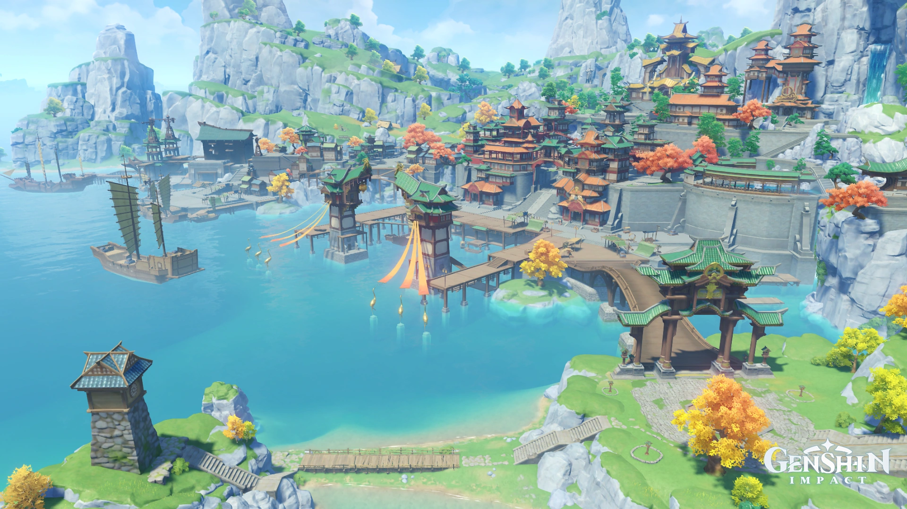

Selamat Datang !
Silahkan Pilih Menu Yang Tersedia Untuk Mulai Menjelajah
About Me
| Nama | : | Achmad Rizqi Ramadhan |
| Kelas | : | IF-5 |
| NIM | : | 10123187 |
Latar Belakang

Aether dan Lumine tiba di Teyvat, namun karena alasan yang tidak diketahui, mereka tidak bangun dan tetap tertidur untuk waktu yang tidak ditentukan. Saudara kandung sang Traveler akhirnya berhasil membangunkan mereka dan mengatakan bahwa mereka harus pergi, dengan kedua saudara kembar tersebut menyaksikan kehancuran Khaenri'ah. Namun, Dewa Tak Dikenal, yang mendeskripsikan dirinya sebagai Penopang Prinsip-prinsip Surgawi, menghalangi jalan mereka. Pertarungan pun terjadi dan mengakibatkan salah satu dari si kembar termakan oleh batu merah dari Dewa Tak Dikenal, dan yang lainnya terperangkap dalam segel yang menyebabkan mereka kehilangan kekuatannya. Lima ratus tahun kemudian, sang Traveler terbangun, terpisah dari saudara mereka, dan terdampar. Suatu hari mereka secara tidak sengaja memancing Paimon dari laut, menyelamatkannya dari tenggelam.
Karakter Utama
The Traveler adalah protagonis yang dapat dimainkan di Genshin Impact. Dalam cutscene pembuka, saudara kembar dari dunia lain melakukan perjalanan melintasi alam semesta, hingga dewa yang tidak dikenal menghalangi jalan mereka. Pemain dapat memilih Aether (pria) atau Lumine (wanita) sebagai Traveler dan saudaranya akan ditangkap. Kekuatan mereka untuk melakukan perjalanan disegel, membuat mereka terdampar di Teyvat. Mereka menyelamatkan Paimon dengan memancingnya keluar dari air dan dia menemani mereka sebagai teman perjalanan baru mereka. Bersama-sama mereka memulai perjalanan untuk menemukan "The Seven" dan bersatu kembali dengan saudara mereka yang hilang.
Teyvat

Teyvat adalah tempat atau latar berjalannya game genshin impact. Teyvat merupakan dunia dimana para dewa hidup berdampingan dengan manusia. Tujuh dewa yang disebut dengan Archon dalam game ini menjadi pemimpin dari tujuh negeri besar yang ada di Teyvat. Ketujuh negeri tersebut adalah Monstadt, Liyue, Inazuma, Sumeru, Fontaine, Natlan dan Snezhnaya. Dalam dunia ini sang Traveler berkelana untuk mencari saudaranya yang hilang dan juga mencari informasi tentang Dewa Tak Dikenal dari ketujuh archon (The Seven).
Elemen
Terdapat tujuh elemen yang menaungi tujuh kawasan di Teyvat. Ketujuh elemen tersebut sangat penting karena setiap karakter akan memiliki satu elemen berbeda. Setiap elemen memiliki ciri khas serta kekurangan dan kelebihannya masing-masing. Ketujuh elemen tersebut adalah Pyro(Api), Hydro(Air), Anemo(Angin), Dendro(Daun), Electro(Petir), Cryo(Es), Geo(Tanah).
Stamina
Stamina adalah atribut yang digunakan dalam berbagai teknik pertarungan dan gerakan seperti Berlari Cepat (atau Menghindar), Memanjat, Berenang, Meluncur, dan Charge Attack. Pengukur Stamina ditampilkan sebagai bilah kuning di sebelah kanan karakter saat kehabisan atau mengisi ulang, dan secara otomatis akan menyembunyikan dirinya sendiri saat terisi penuh. Pemain dapat meningkatkan level pengukur Stamina mereka menggunakan Patung Tujuh di Mondstadt dan Liyue.
Puzzle
Di Teyvat, traveller dapat menemukan berbagai macam teka-teki yang jika diselesaikan akan memberikan hadiah. Hadiah tersebut dapat berupa in game item, Mora, dan Primogem. Primogem adalah mata uang premium dalam genshin impact, primogem dapat digunakan untuk mendapatkan karakter ataupun senjata. Jadi, traveller di rekomendasikan untuk menyelesaikan setiap puzzle yang dilalui.
Monstadt

Mondstadt - Kota Kebebasan adalah kota pertama yang didatangi oleh traveller di dunia Teyvat. Kota ini diperintah oleh Lord Barbatos, sang Anemo Archon. Namun, kehadiran Barbatos jarang terasa di antara orang-orang Mondstadt karena dia menolak untuk memerintah rakyatnya secara langsung. Meskipun mungkin aneh bagi mereka yang berasal dari negara lain, hal ini sesuai dengan cita-cita kebebasan di wilayah ini. Mondstadt di Genshin Impact terinspirasi oleh negara Jerman di dunia nyata.
Liyue

Liyue - Liyue menghargai kesucian kontrak di atas segalanya. Oleh karena itu, orang-orang berkumpul setiap tahun selama Ritus Penurunan untuk mendengarkan bimbingan Geo Archon mereka, Morax. Sebagai salah satu Archon tertua, Morax adalah dewa yang bijaksana, yang memberikan nasihat untuk memastikan perdagangan yang makmur. Namun, seperti yang diungkapkan oleh Genshin Impact Archon Quest, dia mulai bosan dengan perannya yang menonjol. Liyue didasarkan pada dunia nyata Tiongkok.
Inazuma
Inazuma - Inazuma adalah Tanah Keabadian dan wilayah paling tidak bersahabat yang pernah ditemui para traveller sejauh ini. Dipimpin oleh Electro Archon yang kejam, Raiden Ei, penduduk setempat menghadapi risiko kehilangan Vision karena Keputusan Perburuan Vision. Mengambil Vision ini akan membawa Inazuma selangkah lebih dekat menuju keabadian. Inazuma mengambil inspirasi dari dunia nyata Jepang.
Sumeru

Sumeru - Kota para cendekiawan yang terletak di bagian barat-tengah Teyvat. Sebuah negara yang fantastis dengan hutan hujan yang rimbun dan gurun yang tandus, di mana banyak sekali buah kebijaksanaan yang tumbuh dan terkubur. Baik para pengembara yang melakukan perjalanan dari jauh melalui hutan untuk mencapai kota akademi atau menyelami padang pasir untuk menemukan reruntuhan bersejarah gurun merah, banyak pengetahuan berharga yang menanti mereka di sini. Sumeru adalah bangsa yang menyembah Dewa Kusanali, Dendro Archon dan Dewa Kebijaksanaan. Wilayah ini terkenal sebagai pusat pembelajaran Teyvat dan menjadi tempat berdirinya Sumeru Akademiya. Sumeru dilaporkan didasarkan pada wilayah SWANA di dunia nyata.
Fontaine
Fontaine - adalah salah satu dari tujuh wilayah di Teyvat. Merupakan bangsa yang menyembah Focalors, Hydro Archon dan Dewa Keadilan. Di fontaine traveller dapat menyelam ke dalam lautan yang luas, seluruh negeri fontaine dikelilingi oleh lautan yang luas. Kemudian, terdapat 2 elemen/fitur baru yaitu Pneuma dan Ousia. Dengan 2 fitur tersebut menambah taktik dalam pertempuran sehingga lebih menarik.
Natlan
Natlan - adalah salah satu wilayah utama yang dijadwalkan untuk diperkenalkan ke Genshin Impact. Natlan adalah tanah yang dicirikan oleh elemen Pyro, yang diperintah oleh Murata, Pyro Archon. Sering disebut sebagai Lady of Fire dan Dewa Perang, Murata mewujudkan semangat Natlan yang berapi-api. Budaya Natlan berkisar pada perang dan semangat, seperti yang terlihat dari karakter pemarah dan lanskap vulkaniknya. Inspirasi visual dan budaya untuk Natlan diambil dari perpaduan budaya Pribumi Amerika, Spanyol, dan Afrika Barat. Estetika negeri ini diyakini mencakup elemen-elemen dari beragam budaya ini, menciptakan pengalaman yang unik dan imersif bagi para pemain. Hal ini terlihat jelas dalam detail seperti kehadiran musik gitar dan alat musik di Teyvat Storyline Preview dan referensi sumber air panas yang memiliki kekuatan penyembuhan.
Snezhnaya

Snezhnaya - adalah salah satu dari tujuh wilayah di Teyvat. Ini adalah bangsa yang menyembah Tsaritsa, sang Cryo Archon. Suku Fatui, pasukan militer yang berada di bawah kendalinya, sangat terkenal karena pengabdian mereka yang fanatik dan cara-cara mereka yang tak bermoral dalam melaksanakan kehendaknya. Snezhnaya dilaporkan merupakan perpaduan pengaruh dari Rusia dan Italia.